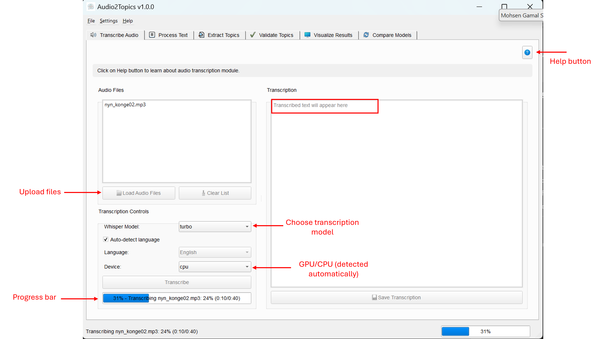
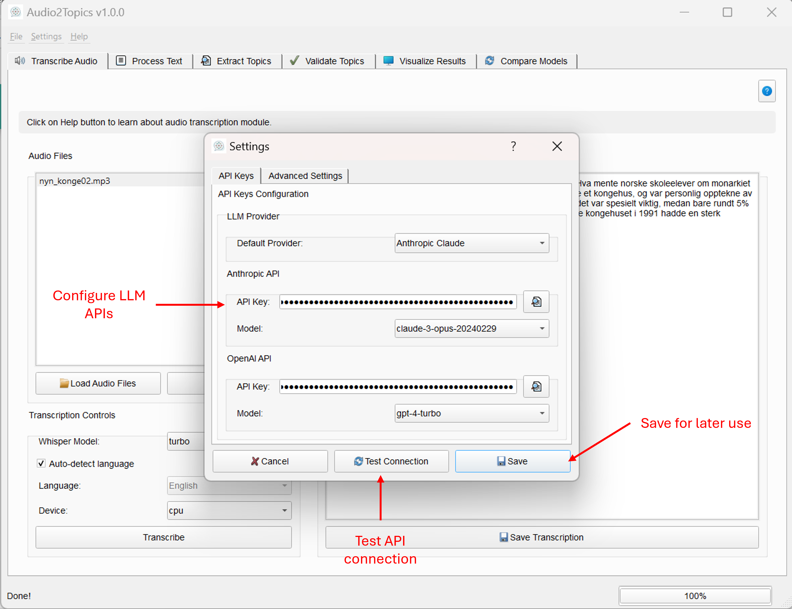

Audio Transcription Module
Overview
The Audio Transcription module enables users to convert audio files to text using OpenAI's Whisper speech recognition technology. It forms the first step in the Audio2Topics workflow, providing accurate transcriptions of audio content for further text processing and topic modeling.
This module allows you to: - Load multiple audio files in various formats (MP3, WAV, M4A, FLAC) - Select from different Whisper model sizes based on your accuracy and speed requirements - Process files using either CPU or GPU acceleration - View and save transcriptions to text files
Main interface of the Transcriber Tab  
Core Components
Transcriber Class
The Transcriber class serves as the main interface for audio transcription functionality. It manages the transcription process and provides methods for saving results and querying available resources.
Methods
| Method | Description | Parameters | Returns |
|---|---|---|---|
transcribe_files() |
Starts transcribing audio files using a worker thread | audio_files: Dict[str, bytes] - Dictionary mapping filenames to file contentmodel_name: str - Whisper model name to use |
Returns the worker thread that can be connected to signals |
save_transcriptions() |
Saves transcriptions to text files | transcriptions: Dict[str, str] - Dictionary with filenames as keys and transcriptions as valuesoutput_dir: str - Directory to save files |
List[str] - List of paths to saved transcription files |
get_available_devices() |
Gets list of available devices for transcription | None | List[str] - List of available devices (CPU and GPUs if available) |
get_available_models() |
Gets list of available Whisper models | None | List[str] - List of available model names |
TranscriberWorker Class
The TranscriberWorker class extends QThread to handle audio transcription in a background thread, keeping the UI responsive during processing.
Signals
| Signal | Description | Parameters |
|---|---|---|
progress_updated |
Emitted to update progress | int: progress percentage, str: status message |
transcription_completed |
Emitted when transcription is done | dict: dictionary of transcriptions |
error_occurred |
Emitted when an error occurs | str: error message |
User Interface
The TranscriberTab class provides the user interface for the audio transcription functionality.
UI Components
- Audio Files Panel:
- File list showing loaded audio files
-
Load and Clear buttons for file management
-
Transcription Controls:
- Model selection dropdown (tiny, base, small, medium, large)
- Device selection (CPU/GPU options)
- Language auto-detection toggle
- Transcribe button
-
Progress bar
-
Transcription View:
- Text area showing the current transcription
- Save button for exporting transcriptions
Usage Guide
Loading Audio Files
- Click the "Load Audio Files" button to open the file selection dialog
- Select one or more audio files (supported formats: MP3, WAV, M4A, FLAC)
- Selected files will appear in the file list on the left panel
# Code example for loading files programmatically
from core.transcriber import Transcriber
transcriber = Transcriber()
audio_files = {}
# Read file content
with open("example.mp3", "rb") as file:
audio_files["example.mp3"] = file.read()
Selecting Transcription Options
- Choose a Whisper model from the dropdown:
- tiny: Fastest, lowest accuracy (~75MB)
- base: Fast with improved accuracy (~142MB)
- small: Good balance of speed and accuracy (~466MB)
- medium: High quality for most use cases (~1.5GB)
-
large: Maximum accuracy for challenging audio (~3GB)
-
Select a device:
- CPU: Available on all systems
-
CUDA: Available if you have an NVIDIA GPU with CUDA support
-
Optionally toggle language auto-detection (enabled by default)
Starting Transcription
- Click the "Transcribe" button to begin processing
- The progress bar will display the current status
- Transcription speed depends on:
- Model size
- Audio file length
- Selected device (GPU is significantly faster)
- System specifications
# Code example for starting transcription programmatically
worker = transcriber.transcribe_files(audio_files, model_name="medium")
# Connect to signals
worker.progress_updated.connect(update_progress)
worker.transcription_completed.connect(handle_completed)
worker.error_occurred.connect(handle_error)
Viewing and Saving Transcriptions
- After transcription completes, select a file from the list to view its transcription
- Click "Save Transcription" to export the current transcription to a text file
- Choose a location and filename in the save dialog
- The transcription will be saved as a plain text file
# Code example for saving transcriptions programmatically
transcriptions = {"example.mp3": "This is the transcribed text."}
saved_files = transcriber.save_transcriptions(transcriptions, output_dir="./output")
Whisper Models
| Model | Parameters | Size | Relative Speed | Best For |
|---|---|---|---|---|
| tiny | 39M | ~75MB | ~32x | Quick transcriptions where accuracy is less critical |
| base | 74M | ~142MB | ~16x | Fast transcriptions with improved accuracy |
| small | 244M | ~466MB | ~6x | Good balance between speed and accuracy |
| medium | 769M | ~1.5GB | ~2x | High-quality transcriptions for most use cases |
| large | 1550M | ~3GB | 1x | Maximum accuracy for challenging audio |
Language Support
Whisper supports transcription in numerous languages and can automatically detect the language being spoken. Best results are achieved with:
- English
- Norwegian
Tips for Better Results
- Audio Quality Matters:
- Use clear recordings with minimal background noise
-
Higher quality audio files generally produce better transcriptions
-
Model Selection:
- Start with the "medium" model for a good balance of accuracy and speed
- Use "turbo" for best balance between spped and accuracy
- Use "large" for difficult audio or when maximum accuracy is needed
-
Use smaller models for faster processing or when resources are limited
-
Processing Strategy:
- Split very long recordings into 10-30 minute segments for better results
-
Test with a short sample to determine the best model for your specific audio
-
Hardware Considerations:
- GPU acceleration dramatically improves processing speed
- Larger models require more memory (RAM)
Troubleshooting
Common Issues
Transcription fails to start - Check for active internet connection (required for initial model download) - Try a smaller model if experiencing memory issues - Ensure sufficient disk space for model download - Restart the application and try again
Poor transcription quality - Try a larger model (medium or large) - Check audio quality and consider pre-processing to reduce noise - For non-English content, verify language detection is working correctly - Split complex audio with multiple speakers into smaller segments
Slow transcription - Use a CPU with more cores or enable GPU acceleration if available - Try a smaller model (base or small) - Close other resource-intensive applications while transcribing - For long files, consider splitting them into smaller chunks
Out of memory error - Use a smaller model - Reduce batch size if transcribing multiple files - Close other applications to free up memory - Consider upgrading your system's RAM if this is a recurring issue